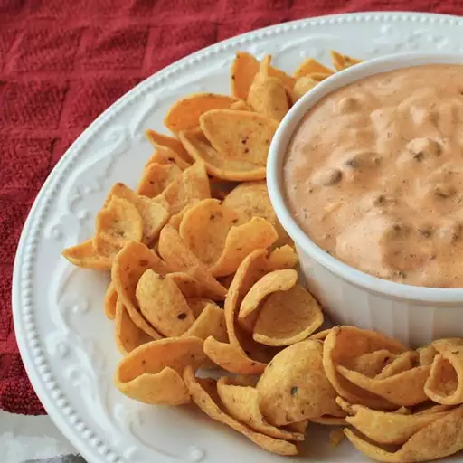

Chili Dip

Description
It's great for parties and football get-togethers. With just three ingredients, it's very easy to prepare. Serve it hot with your favorite corn chips.
Ingredients
- 1 (8 ounce) package cream cheese: softened.
- 1 (15 ounce) can chili without beans.
- 1 (10 ounce) can diced tomatoes with green chile peppers: drained.
Steps:
- In a medium, microwave safe bowl, mix cream cheese, chili without beans and diced tomatoes with green chile peppers.
- Microwave cream cheese mixture on high 1 minute. Remove from microwave, stir and repeat until the mixture is hot and thoroughly blended.